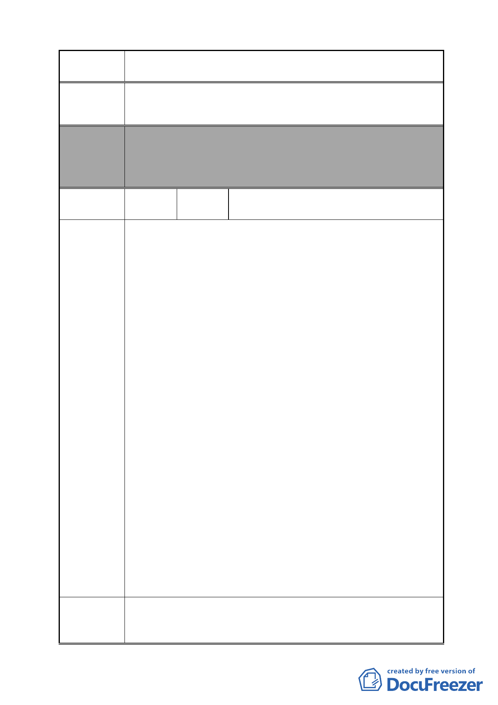

案 名 變更臺北市南港區鐵路地下化沿線土地主要計畫案
昆陽街住戶將捍衛自身財產權不被剝奪，堅決反對參與不公
建議辦法 之市地重劃案，請主管機關將昆陽街排除市地重劃範圍。
委員會
決議
編號
陳情理由
建議辦法
本案除文字誤繕應再作修正外，其餘依市府本次會議所送修
正計畫書內容通過。
（市府本次會議所送修正計畫書，本案將不拓寬昆陽街，逕
依現行規定辦理）
58
陳情人
大都市新天地住宅區全體住戶
大都市新天地住宅區管理委員會
1.台電公司罔顧市民權益逕定於南港區人口稠密處欲設置超
高壓變電所，本社區居民及南港區各里民自始反對，經多次
陳請，自組自救會協調，請民意代表奔走協商，並於數次公
聽會中要求遷移，甚至舉辦抗爭行動，但台電公司猶不改其
初衷，仍堅持將超高壓變電所設置於人口稠密處，致鄰近居
民人心惶惶不安，深恐大禍將臨。
2.台電公司雖於九十六年十月停工，並應允遷建變電所至「變
更台北市南港區鐵路地下化沿線土地主要計畫案」中所載之
公園預定地，然依據都發局九十七年十月二十七日起公開展
覽之該計劃案及九十八年二月二十六日都委會召開第一次
專案小組會議所載，玉成變電所仍擬設於基地編號 A 位置
(台電中心倉庫及玉成變電所用地街廓)，亦即僅在台電公司
中心倉庫內預定地「北移」大約五十公尺，仍緊鄰本社區，
完全漠視民意，令近鄰玉成里及合成里居民非常驚嚇。
3.本社區全體住戶重申堅決反對在住家隔鄰興建此超高壓變
電所，嚴重危害生命財產之安全。並提出以下建議：
（1）為供應南港地區日漸增加之工業用電 (南港站三鐵共構
由為其中供電需求最為急迫者)，變電所應設置靠近該區
以便供電，將有效減少超高壓配線之費用，同時，不經
過人口稠密地區避免擴大民怨。
（2）變電所應建置在人口稠密度較低之山區或大型公園採地
下化設計，以避免危害鄰近住戶造成民怨。
4.懇請 貴單位體恤南港區全體居民之心聲，協調台電公司遷
移至上述地點或更適宜之地方，以造福居民百姓，不勝感
荷！
緣因台灣電力公司擬將玉成超高壓變電所設置於人口稠密之
處，枉顧鄰近住戶生命財產安全，顯有失當；懇請 貴單位
協調台電公司重行研議，將其遷移至人口稠密度較低之山區
- 62 -